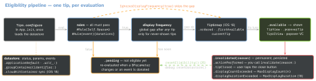

swiftui · folio
In one line: A tip is a small, transient view that teaches one non-obvious feature.
You declare content + eligibility on a Tip; TipKit (iOS 17) keeps state in a
persistent datastore, evaluates rules (@Parameter values, counted
Tips.Event donations), spaces tips by a global display frequency, and retires a tip for
good once invalidated — user acted, closed it, or it hit its cap.
Download PDF Print view LaTeX source


How it works
Tip(Identifiable, Sendable):title,message?,image?,actions,rules,options— the last three are result builders.Tips.configure(_:)(throws) must run before any tip displays. Frequency.immediate(default) ·.hourly·.daily·.weekly·.monthly.- Parameter rule = app state.
@Parametervalues are persisted across launches (.transientresets); assigning one re-evaluates the rules that read it. - Event rule = repeated behaviour:
await event.donate()(sendDonation()from sync code); predicate over$0.donations:.donatedWithin(.days(5)),.count,largestSubset(groupedBy:).Event<Info: Codable>donations carry data to filter on. Queries see the latest 1000 donations; iOS 26:DonationLimit(maximumCount:maximumAge:). - Display frequency = minimum gap after a tip shows before another, never-shown tip may appear. A tip already shown still reappears while its rules pass.
- Options:
MaxDisplayCount(3)(no default cap) ·MaxDisplayDuration(300)(iOS 18, cumulative, ≥ 60 s) ·IgnoresDisplayFrequency(true). - Observe:
status·shouldDisplay·statusUpdates·shouldDisplayUpdates. SwiftUI views observe for you; UIKit code must.
Example — the tip
import TipKit
struct ShareTip: Tip {
@Parameter static var isLoggedIn: Bool = false // persisted
static let openedDoc = Tips.Event(id: "openedDoc") // counted
var title: Text { Text("Share with one tap") }
var message: Text? { Text("Send this document to a teammate.") }
var image: Image? { Image(systemName: "square.and.arrow.up.fill") }
var actions: [Action] { Action(id: "how", title: "Show me") }
var rules: [Rule] { // AND: each narrows
#Rule(Self.$isLoggedIn) { $0 == true }
#Rule(Self.openedDoc) { $0.donations.donatedWithin(.week).count >= 3 }
}
var options: [any TipOption] { MaxDisplayCount(3) }
}Example — configure, feed, present, retire
@main struct DocsApp: App {
init() {
#if DEBUG
try? Tips.resetDatastore() // BEFORE configure
#endif
try? Tips.configure([.displayFrequency(.daily)])
}
var body: some Scene { WindowGroup { EditorView() } } }
// login: ShareTip.isLoggedIn = true -> rules re-evaluate
// editor: .task { await ShareTip.openedDoc.donate() }
Button("Share", systemImage: "square.and.arrow.up") {
tip.invalidate(reason: .actionPerformed) // they found it
share()
}
.popoverTip(tip) { action in if action.id == "how" { showHelp() } }Presentation
| API | Behaviour |
|---|---|
TipView(tip) | inline, takes layout space; keeps context visible |
.popoverTip(tip) | anchored to a control, keeps content flow |
TipUIView | UIKit inline — you add / remove it |
TipUIPopoverViewController | UIKit popover on a sourceItem; you present / dismiss it |
TipUICollectionViewCell | a tip as a list cell · AppKit: TipNSView, TipNSPopover |
.tipViewStyle(_:) | custom look; built-in MiniTipViewStyle |
Testing
All run before configure; precedence showTipsForTesting([A.self]) > hideTipsForTesting > showAllTipsForTesting() > hideAllTipsForTesting(). resetDatastore() = first-launch state. Launch args: -com.apple.TipKit.ResetDatastore 1, -com.apple.TipKit.ShowTips A,B.
When a tip is the right tool (HIG)
Simple features (≤ 3 actions), 1–2 sentences, actionable. Not for tours, promotion or critical info — a tip can be missed. Rule it to the people who benefit; pace several (e.g. once per 24 h). Filled SF Symbol; don’t repeat the image the tip points at.
Traps
- No
Tips.configure→ no tip and no error. - Invalidation is persisted: closed once in a test run, gone next run — reset the store.
- Forgetting
invalidate(reason: .actionPerformed)nags people who already use the feature. - Frequency never throttles an already-shown tip:
MaxDisplayCount. - UIKit: observe in a
Task, cancel it inviewWillDisappear. - CloudKit sync (iOS 18): a separate container; iCloud + Background Modes (remote notifications).
TipGroupis iOS 18 (announced as TipSequence);.orderedwaits for each earlier tip’s invalidation.